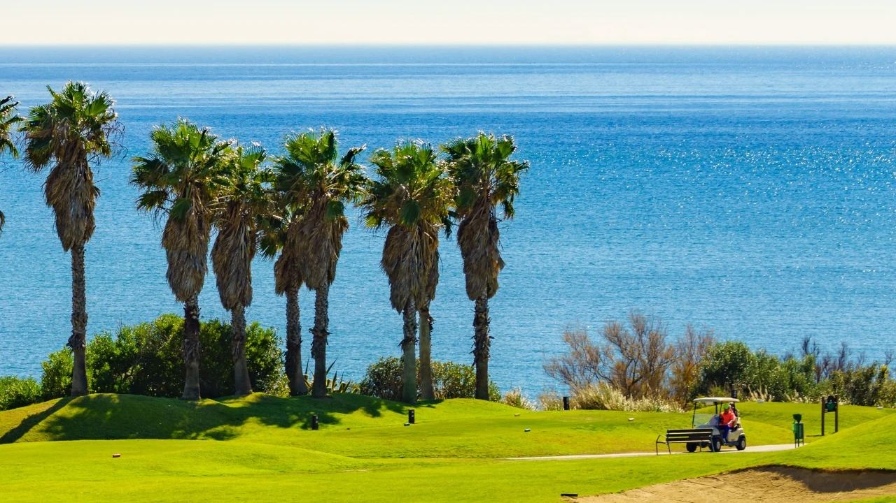
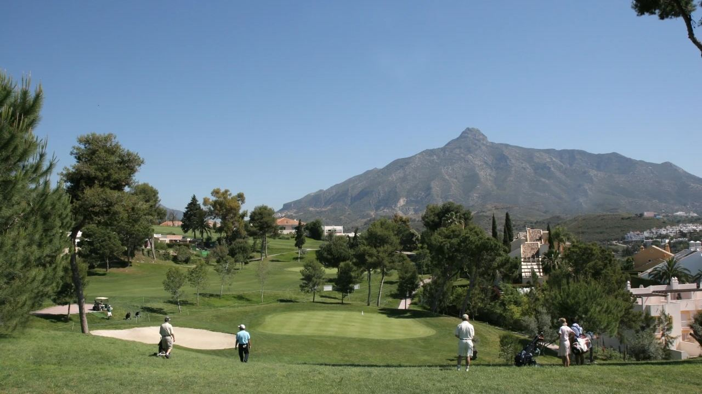
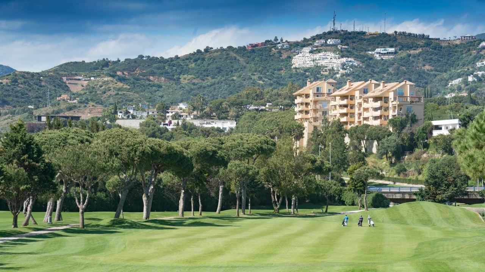
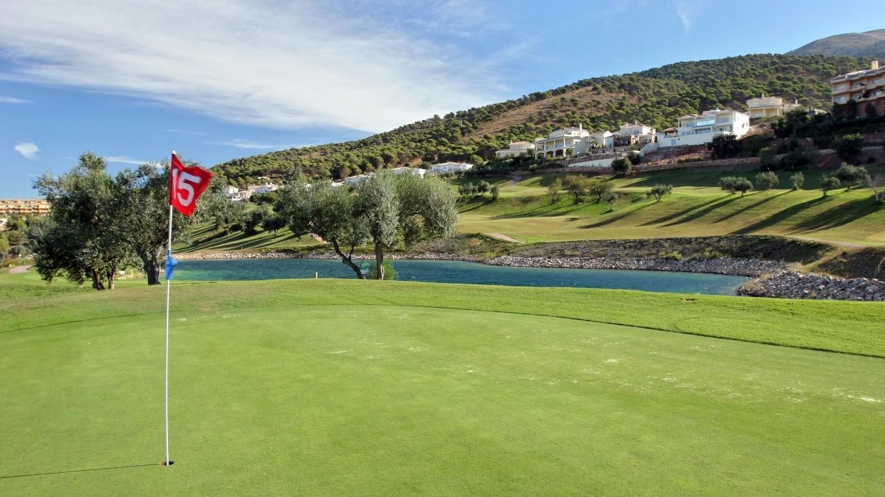
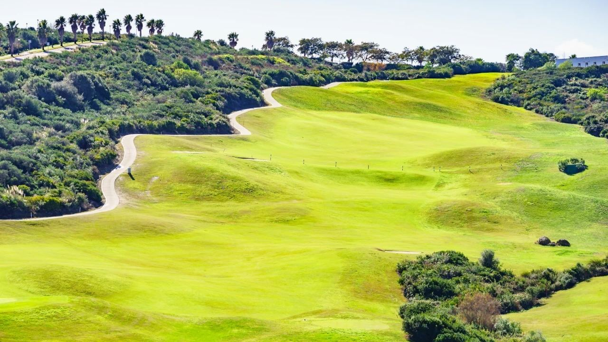
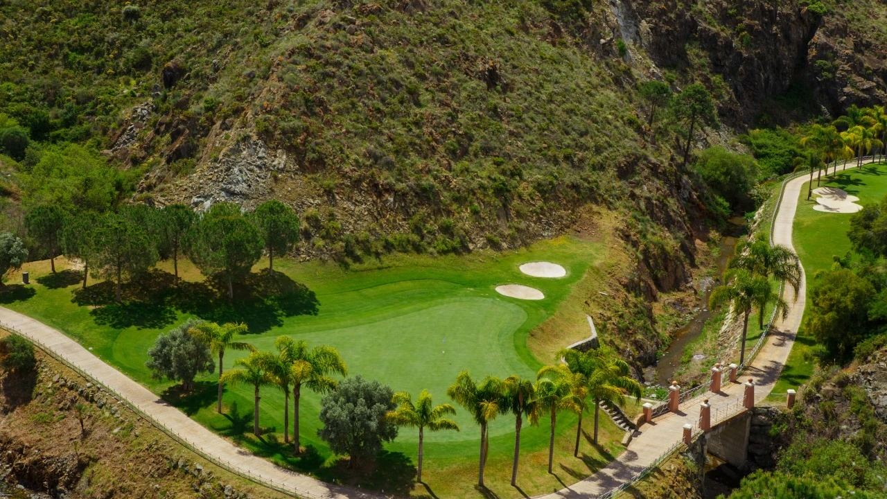

Orte · Costa del Sol
Exklusive Golfclubs an der Costa del Sol
 Von Lucyna Gacek · · aktualisiert · 3 Min. Lesezeit
Von Lucyna Gacek · · aktualisiert · 3 Min. Lesezeit

Kurz gesagt: Die Costa del Sol hat rund 70 Golfplätze zwischen Málaga und Sotogrande, deshalb heißt sie auch „Costa del Golf“. Zu den bekanntesten gehören der Real Club Valderrama (Ryder Cup 1997), Finca Cortesín (Solheim Cup 2023), Real Club Las Brisas, Los Naranjos und La Quinta. Gäste zahlen ein Greenfee pro Runde, meist ab etwa 60 € bis zu mehreren hundert Euro in der Hochsaison. Bewohner können Jahresmitgliedschaften kaufen, und einige der exklusivsten Clubs sind nur für Mitglieder oder auf Einladung zugänglich.
Milde Winter, mehr als 300 Sonnentage und Plätze mit Blick auf Meer und Berge haben die westliche Costa del Sol zu einem der beliebtesten Golfziele Europas gemacht. Für viele unserer Kunden ist Golf nicht nur ein Hobby: Es entscheidet, wo sie kaufen, und wird zum Mittelpunkt ihres sozialen Lebens in Spanien.
Hier ein Überblick über die renommiertesten Clubs, wie Spielen und Mitgliedschaft funktionieren und worauf Sie bei einer Immobilie am Golfplatz achten sollten.
Warum die Costa del Sol ein Golfparadies ist

Hier kann man das ganze Jahr spielen. Wintertage sind oft 17–19 °C warm und sonnig, deshalb liegt die Golf-Hochsaison zwischen Oktober und Mai, nicht im Sommer. Die Plätze liegen nah beieinander, meist innerhalb von 30 Minuten entlang der A-7, und der Flughafen Málaga hat Direktflüge in die meisten Städte Deutschlands, Österreichs und der Schweiz. Viele Plätze stammen von großen Namen wie Robert Trent Jones, Seve Ballesteros, Jack Nicklaus und Tom Fazio.
Die renommiertesten Clubs

- Real Club Valderrama (Sotogrande) – einer der berühmtesten Plätze Europas, Austragungsort des Ryder Cup 1997, des ersten auf dem europäischen Festland. Startzeiten für Gäste sind sehr begrenzt.
- Finca Cortesín (Casares) – ein luxuriöser Resortplatz, auf dem 2023 der Solheim Cup und mehrere Profi-Matchplay-Turniere stattfanden.
- Real Club de Golf Las Brisas (Nueva Andalucía) – ein klassischer Platz von Robert Trent Jones im Golf Valley von Marbella, bekannt für alte Bäume und schnelle Grüns.
- Los Naranjos und Aloha (Nueva Andalucía) – traditionsreiche Plätze direkt hinter Puerto Banús, bei Bewohnern beliebt.
- La Quinta Golf (Benahavís) – 27 Löcher mit Blick auf Meer und La Concha, umgeben von Wohnanlagen.
- La Zagaleta (Benahavís) – zwei private Plätze in einer der exklusivsten bewachten Anlagen Europas, nur für Bewohner und ihre Gäste.
Greenfee und Mitgliedschaft: so funktioniert es

Es gibt zwei Wege zu spielen:
- Greenfee – ein Preis pro Runde, im Voraus gebucht. Auf den meisten Plätzen etwa 60 bis 200 €, auf den berühmtesten in der Hochsaison deutlich mehr. Twilight- und Sommertarife sind günstiger, ein Buggy kostet meist extra.
- Mitgliedschaft – ein Jahresbeitrag, teils mit Aufnahmegebühr oder Clubanteil. Mitglieder haben bevorzugte Startzeiten, Turniere, Clubhaus und oft Pool, Fitnessraum und Akademie. Manche Clubs bieten Familien-, Wochentags- oder Nichtresidenten-Pakete oder eine Probezeit.
Die Preise ändern sich jede Saison, also auf der Website des Clubs nachsehen. Wer mehr als zwei- bis dreimal pro Woche spielt, fährt mit einer Mitgliedschaft meist günstiger.
Eine Immobilie am Golfplatz kaufen

Immobilien am Golfplatz reichen von Apartments in bewachten Anlagen bis zu Penthäusern und großen Villen mit Blick auf die Fairways. Die Vorteile:
- offene, grüne Aussicht, die nicht verbaut werden kann,
- ruhige Umgebung und in vielen Anlagen Sicherheitsdienst rund um die Uhr,
- stabile Nachfrage von Käufern und Urlaubsmietern,
- teils vergünstigte oder inklusive Mitgliedschaft für Eigentümer.
Prüfen Sie vor dem Kauf die Gemeinschaftskosten, ob der Platz öffentlich oder privat ist, die Lage zum Fairway (verirrte Bälle) und die Lizenzlage, falls Sie an Touristen vermieten wollen.
Golf als Weg in die Gemeinschaft

Für viele Neuankömmlinge beginnen im Golfclub die ersten Freundschaften. Die Clubs organisieren wöchentliche Turniere, gesellige Abende und Jugendakademien, und die Mitglieder kommen aus ganz Europa. Es ist einer der schnellsten Wege, sich an der Costa del Sol zu Hause zu fühlen.
Häufige Fragen
Wie viele Golfplätze gibt es an der Costa del Sol?
Rund 70, die meisten zwischen Málaga und Sotogrande. Deshalb nennt man die Gegend auch Costa del Golf.
Welcher ist der berühmteste Golfplatz der Costa del Sol?
Der Real Club Valderrama in Sotogrande, Austragungsort des Ryder Cup 1997. Sehr bekannt sind auch Finca Cortesín, Las Brisas und La Quinta.
Was kostet ein Greenfee an der Costa del Sol?
Meist etwa 60 bis 200 € pro Runde, auf den renommiertesten Plätzen in der Hochsaison mehr. Twilight- und Sommertarife sind günstiger.
Wann ist die beste Zeit zum Golfen an der Costa del Sol?
Von Oktober bis Mai. Im Sommer ist es mittags sehr heiß, deshalb spielen die meisten früh morgens oder abends.
Ein Zuhause nahe dem ersten Abschlag
Ob Apartment mit Blick aufs Fairway oder Villa neben einem privaten Platz: Wir zeigen Ihnen die besten Golflagen zwischen Málaga und Sotogrande. Schreiben Sie uns, wo und wie oft Sie gerne spielen.
Quellen: Andalusia Tourist Board – Golf · Costa del Sol Tourist Board · Real Club Valderrama · Real Federación Española de Golf